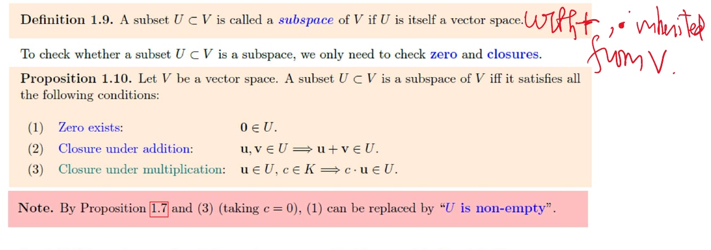

7 Sept. / Linear equations
A=(aij)∈Mm×n(R): m rows, n columns. Column vectors throughout.
Notation.
Upper triangular: aij=0 for i>j; lower: i<j; diagonal: i=j.
Row operations.
All reversible ⇒ same solutions. Operate on the right-hand side too.
REF. Zero rows last; leading 1's move right down the rows. RREF: pivot columns zero elsewhere. This lecture takes pivots to be 1.
Solving. Eliminate → back substitute. For n variables and r coefficient pivots:
Ex. Nonzero rows of the echelon system:
x2=s, x4=t ⇒x3=−17−2t, x1=56+s+3t.
Ex. 3x1−9x2=4, −2x1+6x2=h ⇒0=h+8/3.
Consistent iff h=−8/3; then (x1,x2)=(4/3+3t,t).
Theorem. Homogeneous, n>m ⇒ nonzero solutions:
At least one free variable. Square RREF with n pivots =In.
9 Sept. (I) / Inverse and LU
(AB)ij=∑kaikbkj; (m×n)(n×p)→m×p.
Inverse. AA−1=A−1A=I; square A only.
Row-reduce [A∣I]→[Q∣E]: Q=I⇒A−1=E; otherwise no inverse.
Why: E=Ek⋯E1 (elementary matrices), EA=I.
Each Ei invertible ⇒A=E−1⇒AE=I too.
Other product orders similarly. Inverses reverse order.
Theorem. Triangular + nonzero diagonal ⇒ inverse triangular of the same type.
Upper case: solve Ax=ej backwards. i>j⇒xi=0; division only by aii=0. These x's form A−1.
LU. Elimination without row swaps:
L: unit lower triangular; elimination multipliers below the diagonal.
Ex. Opening matrix from The Nine Chapters:
Ax=b: first Ld=b (forwards), then Ux=d (backwards).
With swaps: PA=LU, so Ld=Pb, Ux=d. Slides' A=PLU uses the inverse permutation.
Factor once O(n3); each new b: O(n2). Reuse L,U rather than form A−1.
9 Sept. (II) / Fields; vector spaces
Def.1.1. Field K: (K,+), (K∖{0},⋅) abelian groups + distributivity; 0=1.
Examples: Q,R,C, Q(2), R(t), Fp (p prime).
Z/6Z fails: 2⋅3=0.
Def.1.4. Vector space over K: addition V×V→V, scalar multiplication K×V→V; for u,v,w∈V, c,d∈K,
0∈V and negatives must exist. Scalars ∈K; vectors ∈V.
Prop.1.5--7. Unique zero, unique negative; cancellation; cu=0⟺c=0 or u=0.
Cancellation: add −u. Also u+(−1)u=(1−1)u=0⇒(−1)u=−u.
Examples. {0}, Kn, Mm×n(K), K[t]. Over R: C0(R); {f:f′′+f=0}, since
C over R: yes. R over C: no, i⋅1∈/R.
Non-examples (usual operations).
- x,y≥0: multiplying (1,0) by −1 leaves the set.
- Invertible matrices; degree exactly n; f(0)=1: zero missing.
- A line not through 0: same obstruction.
Subspaces; span

9 Sept., vector spaces, p.13.
Test. U=∅ and au+bv∈U for all u,v∈U, a,b∈K.
Identities inherited from V; −u=(−1)u∈U.
Examples: x+y+z=0 in R3; Kn[t] (degree ≤n, including 0); {f:f(0)=0}.
R2 itself is not a subset of R3; {(x,y,0)T} is.
Null space. A∈Mm×n(K):
Def.1.11. Span(S)={finite linear combinations of vectors in S};
Span(∅)={0}.
Thm.1.12. Span(S) is a subspace, the smallest one containing S. In particular Span(U)=U for a subspace U.
Proof: add/scale combinations; still finite combinations. Any subspace containing S contains all of them.
Ex.1.27.
a,b∈R arbitrary ⇒U=Span{(1,−1,1,0)T,(−3,1,0,1)T}≤R4.
Back to equations. If Axp=b,
Homogeneous: subspace. Inhomogeneous: translate; b=0⇒0 not a solution.